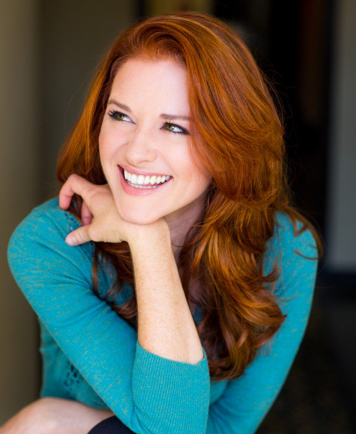

PERSONAJES IMPORTANTANTES DE LA SERIE
| NOMBRE | DESCRIPCIÓN | IMAGEN |
|---|
| Meredith Grey |
Jefa de cirugia general en el Grey Sloan Memorial Hospital nacida en 1978, madre de Zola Grey Shepherd, Dereck Bailey Shepherd Grey y Ellis Shepherd Grey, ganadora del premio Catherine Fox. |
|
| Derek Shepherd |
Respetado neurocirujano de del Grey Sloan Memorial Hospital tambien llamado doctor apuesto, padre de Zola Grey Shepherd, Dereck Bailey Shepherd Grey y Ellis Shepherd Grey, nacido en 1966 y fallecido el 26 de Marzo de 2015 |
|
| Alex Karev |
Cirujano pediatra en el Grey Sloan Memorial Hospital y ejemplo de superación y bondad |
 |
| Cristina Yang |
Cirujana Cardiotoracica entrenada en el Grey Sloan Memorial Hospital, competitiva, fria, sarcastica, inteligente y una diosa de la cardiologia |
|
| Mark Sloan |
Jefe del departamento de cirugia plastica y otorrinolaringologo en el hospital Grey Sloan Memorial Hospital que en ese entonces llevaba por nombre Hospital Seattle Grace Mercy West y padre de Sofia Robbin Sloan Torres. Muere el 27 de septiembre de 2012 al poco tiempo del tambien fallecimiento del amor de su vida, Lexie Grey. |
|
| Lexie Grey |
Cirujana interna en el hospital Seattle Grace y residente en el Hospital Seattle Grace Mercy West, hermana brillante de la doctora Meredith Grey y alma gemela del doctor Mark Sloan. muere en un accidente de avión en el 2012. |
|
| Callie Torres |
Jefa de cirugia ortopedista y madre de Sofia Robbin Sloan Torres |
|
| Arizona Robbins |
Cirujana pediatrica y neonatal en el Grey Sloan Memorial Hospital y jefa del departamento Fetal, proveniente de familia militar y madre de Sofia Robbin Sloan Torres |
|
| April Kepner |
Cirujana adjunta de trauma, madre de Harriet Kepner-Avery, cristiana y dedicada al servicio de la comunidad y al salvafr vidas |
 |
| Amelia Shepherd |
Jefa de neurocirugia en el Grey Sloan Memorial Hospital, madre, hermana del fallecido Derek Shepherd y una gran tia |
|